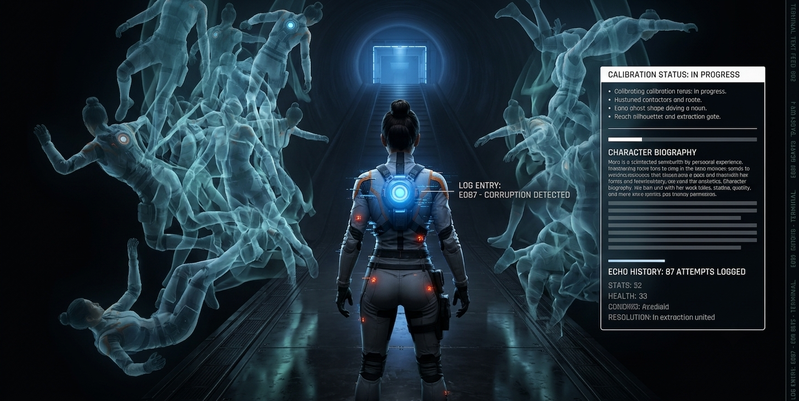

.jpeg)
CRITICAL FAILURE DETECTED
ECHO RUN
THE LAST CALIBRATION
"A training facility that remembers every failed run."
:: SUBJECT: MARA // STATUS: TRAPPED
v1.0.4.UE5
SECURE CONNECTION
SECURE CONNECTION
CRITICAL FAILURE DETECTED
"A training facility that remembers every failed run."
:: SUBJECT: MARA // STATUS: TRAPPED
Echo Run is a short, tense third-person traversal experience. You are Mara, forced into the Echo Track—a brutal, shifting training facility.
But the track is not empty. It remembers. Every time you fail, every time the hazards consume you, an Echo Imprint is left behind. You run alongside the ghosts of your own past mistakes.
Your objective is simple: Observe. Move. Survive. Reach the extraction platform before your health reaches zero.
.jpeg)
SECTOR OVERVIEW // 6 STAGES TO EXTRACTION

A tilted medical corridor. Low-intensity blue emergency strips guide the way forward. The calm before the trial.
A long runway demanding momentum. Distance creates urgency. Reflective floor highlights emphasize speed.
Gaps and broken panels test timing and jumps. The void below is fatal. Orange underlight warns of the danger.
Strong orange emissive panels deal rapid damage on contact. Find a safer route or risk the burn.
A rare safe space. Soft green radial light. Step on the pad to initiate a Recovery Pulse and restore vital HP.
High contrast run to the Blue-White Extraction Gate. Survive the final push while surrounded by your Echo ghosts.

Plucked from the active roster for "specialized calibration," Mara is the only test subject to survive more than 12 cycles in the Echo Track. Her suit is equipped with experimental kinetic dampeners, designed to convert forward momentum into survival.
She doesn't know who built the track. She only knows that every time she fails, a piece of her data remains behind. The ghosts she runs alongside are her own past attempts, repeating her fatal mistakes in an endless loop.
Contact with orange environmental elements immediately drains health. Damage resistance is zero by design.
Locate green medical alcoves. Overlapping these zones triggers a health restoration sequence.
.jpeg)
.jpeg)
.jpeg)
Echo Run strips away the bloat of modern platformers and leaves you with raw, unforgiving momentum. The mechanic of racing your own failure ghosts adds a psychological layer to the horror of missing a jump.
READ ARCHIVE >The developers have crafted an aesthetic that is as hostile as it is beautiful. Every glowing orange vent feels like a threat, and the UE5 lighting makes every mistake visually spectacular.
READ ARCHIVE >Built by an elite student cohort, Echo Run proves that tight scope and obsessive polish trump massive budgets. This is the future of independent development.
READ ARCHIVE >STUDENT DEVELOPMENT COHORT // OMEGA PROTOCOL
LEAD ENGINEER
ART DIRECTOR
LEVEL DESIGNER
SYSTEMS & UI
The Echo Track requires new data. Submit your credentials to request access to the Alpha Test phase. Survival is not guaranteed. Data collection is mandatory.
By submitting, you agree to the indefinite retention of your biological and kinetic data.
The track is resetting. Your previous data has been purged. Only your Echoes remain. Built in Unreal Engine 5 for ultimate atmospheric fidelity.